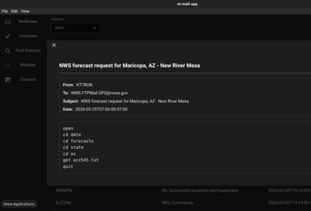

et-mail provides a streamlined experience for radio based email by taking the guesswork out of which Winlink stations to connect to by incorporating real-time, offline HF prediction. It supports switching transport modes (AX.25, ardop, VARA) with zero configuration and without leaving the application.
